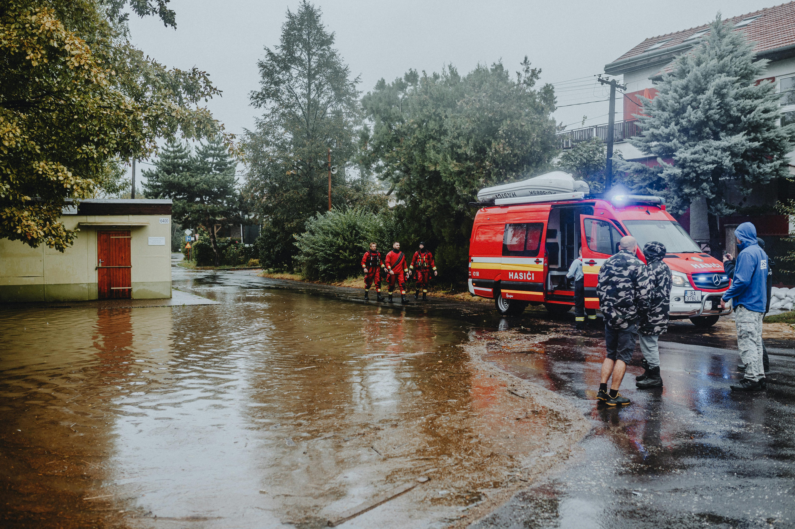
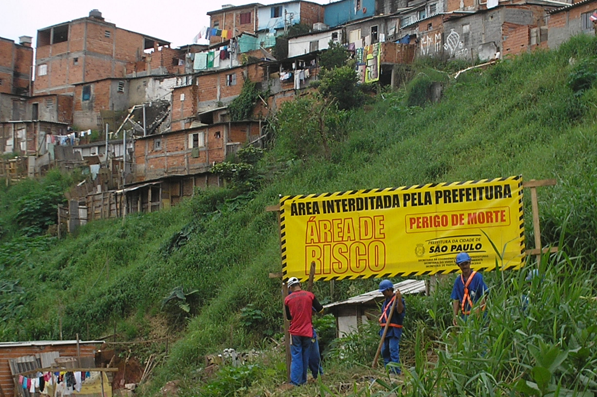

Problema
Milhões de brasileiros enfrentam enchentes todos os anos. Famílias perdem casas, cidades colapsam e vidas são destruídas em horas.
A falta de tecnologia preventiva e políticas eficazes tornam esses desastres recorrentes, previsíveis e cada vez mais devastadores.
Tecnologias Utilizadas
Sensoriamento remoto, inteligência artificial, Big Data e modelagem urbana tornam possível prever, monitorar e reagir antes da tragédia acontecer.
Aplicativos, satélites, sensores e dados em tempo real formam uma rede integrada que protege comunidades e salva vidas.
Objetivos
Queremos reduzir mortes, danos materiais e o impacto social causado pelas enchentes em áreas urbanas vulneráveis.
Nosso foco é antecipar riscos, agilizar respostas e garantir que cada cidadão receba o alerta certo, na hora certa.
Público-Alvo
Nossa solução é voltada para moradores de áreas de risco, prefeituras, Defesa Civil e profissionais de planejamento urbano.
Cidades com pouca infraestrutura terão acesso a ferramentas tecnológicas acessíveis e de fácil implementação.
Benefícios
Mais segurança para quem vive em áreas de risco. Menos prejuízos econômicos e mais eficiência na gestão de desastres naturais.
Com tecnologia, transformamos prevenção em realidade e garantimos um futuro mais resiliente para todos.
No Dia a Dia
Alertas no celular, mapas de risco acessíveis e monitoramento constante tornam possível agir com tempo e salvar o que importa.
Autoridades planejam melhor, cidadãos se protegem mais e todos ganham com uma cidade mais inteligente e preparada.